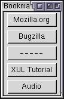
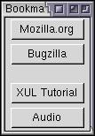

Templates
In this section, we'll find out how to populate elements with data.
Populating Elements
XUL provides a method in which we create elements from data supplied by RDF, either from an RDF file or from an internal datasource. Numerous datasources are provided with Mozilla such as bookmarks, history and mail messages. More details on these will be provided in the next section.
Usually, elements such as treeitems and menuitems will be populated with data. However, you can use other elements if you want although they are more useful for specialized cases. Nevertheless, we'll start with these other elements because trees and menus require more code.
To allow the creation of elements based on RDF data, you need to provide a simple template which will be duplicated for each element that is created. Essentially, you provide only the first element and the remaining elements are constructed based on the first one.
The template is created using the template element. Inside it, you can place the elements that you want to use for each constructed element. The template element should be placed inside the container that will contain the constructed elements. For example, if you are using a tree, you should place the template element inside a tree element.
This is better explained with an example. Let's take a simple example where we want to create a button for each top-level bookmark. Mozilla provides a bookmarks datasource so it can be used to get the data. This example will only get the top-level bookmarks (or bookmark folders) as we're going to create buttons. For child bookmarks, we would need to use an element that displays a hierarchy such as a tree or menu.
To view this example, you will need to create a chrome package and load the file from there. You can then enter the chrome URL into the browser URL field.
Example 9.2.1: Source<vbox datasources="rdf:bookmarks" ref="NC:BookmarksRoot" flex="1">
<template>
<button uri="rdf:*" label="rdf:http://home.netscape.com/NC-rdf#Name"/>
</template>
</vbox> Here, a vertical box has been created that will contain a column of buttons, one for each top-level bookmark. You can see that the template contains a single button. This single button is used as a basis for all the buttons that need to be created. You can see in the image that the set of buttons has been created, one for each bookmark.
Try adding a bookmark in the browser while you have the example window open. You'll notice that the buttons in the example get updated instantly. (You may have to focus the window for it to change.)
The template itself is placed inside a vertical box. The box has two special attributes that allow it to be used for templates, which are used to specify where the data comes from. The first attribute on the box is the datasources attribute. This is used to declare what RDF datasource will be providing the data to create the elements. In this case, rdf:bookmarks is used. You can probably guess that this means to use the bookmarks datasource. This datasource is provided by Mozilla. To use your own datasource, specify the URL of an RDF file for the datasources attribute, as indicated in the example below:
<box datasources="chrome://zoo/content/animals.rdf"
ref="http://www.some-fictitious-zoo.com/all-animals">You can even specify multiple datasources at a time by separating them with a space in the attribute value. This can be used to display data from multiple sources.
The ref attribute indicates where in the datasource you would like to retrieve data from. In the case of the bookmarks, the value NC:BookmarksRoot is used to indicate the root of the bookmarks hierarchy. Other values that you can use will depend on the datasource you are using. If you are using your own RDF file as a datasource, the value will correspond to the value of an about attribute on an RDF Bag, Seq or Alt element.
By adding these two attributes to the box above, it allows the generation of elements using the template. However, the elements inside the template need to be declared differently. You may notice in the example above that the button has a uri attribute and an unusual value for the label attribute.
An attribute value inside the template that begins with 'rdf:' indicates that the value should be taken from the datasource. In the example earlier, this is the case for the label attribute. The remainder of the value refers to the name property is the datasource. It is constructed by taking the namespace URL used by the datasource and appending the property name. If you don't understand this, try re-reading the last part of the previous section. It explains how resources in RDF can be referred to. Here, we only use the name of the bookmark but numerous other fields are available.
The label of the buttons is set to this special URI because we want the labels on the buttons to be set to the names of the bookmarks. We could have put a URI in any of the attributes of the button, or any other element. The values of these attributes are replaced with data supplied by the datasource which, in this case, is the bookmarks. So we end up with the labels on the buttons set to the names of the bookmarks.
The example below shows how we might set other attributes of a button using a datasource. Of course, this assumes that the datasource supplies the appropriate resources. If a particular one is not found, the value of the attribute will be set to an empty string.
<button class="rdf:http://www.example.com/rdf#class"
uri="rdf:*"
label="rdf:http://www.example.com/rdf#name"/>
crop="rdf:http://www.example.com/rdf#crop"/>As you can see, you can dynamically generate lists of elements with the attributes provided by a separate datasource.
The uri attribute is used to specify the element where content generation will begin. Content earlier will only be generated once whereas content inside will be generated for each resource. We'll see more about this when we get to creating templates for trees.
By adding these features to the container the template is in, which in this case is a box, and to the elements inside the template, we can generate various interesting lists of content from external data. We can of course put more than one element inside a template and add the special RDF references to the attributes on any of the elements. The example below demonstrates this.
Example 9.2.2: Source<vbox datasources="rdf:bookmarks" ref="NC:BookmarksRoot" flex="1">
<template>
<vbox uri="rdf:*">
<button label="rdf:http://home.netscape.com/NC-rdf#Name"/>
<label value="rdf:http://home.netscape.com/NC-rdf#URL"/>
</vbox>
</template>
</vbox>This creates a vertical box with a button and a label for each bookmark. The button will have the name of the bookmark and the label will have the URL.
The new elements that are created are functionally no different from ones that you put directly in the XUL file. The id attribute is added to every element created through a template which is set to a value which identifies the resource. You can use this to identify the resource.
You can also specify mutliple resource values in the same attribute by separating them with a space, as in the example below. More about resource syntax.
Example 9.2.3: Source<vbox datasources="rdf:bookmarks" ref="NC:BookmarksRoot"
flex="1">
<template>
<label uri="rdf:*" value="rdf:http://home.netscape.com/NC-rdf#Name rdf:http://home.netscape.com/NC-rdf#URL"/>
</template>
</vbox>How Templates are Built
When an element has a datasources attribute, it indicates that the element is expected to be built from a template. Note that it isn't the template tag that determines whether content is built, it is the datasources attribute. When this attribute is present, an object called a Builder is added to the element. It is this object that is responsible for building the content from the template. In JavaScript you can access the builder object with the builder property, although usually you would only need to do this to have the builder regenerate the content in situations where it is not done automatically.
There are two different types of builders. The first is a content builder and is used in most situations, and the other is a tree builder which is used only for trees.
The content builder takes the content inside the template element and duplicates it for each row. For instance, if the user had ten bookmarks in the example above, ten label elements would be created and added as children of the vbox element. If you were to use DOM functions to traverse the tree, you will find these elements there and can query their properties. These elements get displayed, but the template itself is not displayed, although it still exists the the document tree. In addition, the id of each of the labels will be set to the RDF resource for that row.
The content builder always starts at the place where uri="rdf:*" is specfied. If the uri attribute is placed on an element lower in the element tree, the elements outside are only created once. In the example below, one hbox will be created and it will be filled with a label for each item.
<template>
<hbox>
<label uri="rdf:*" value="rdf:http://home.netscape.com/NC-rdf#Name"/>
</hbox>
</template>If there is other content inside the element with the datasources attribute but outside the template, that content will also appear. This way, you can mix static content and dynamic content from a template.
The tree builder, on the other hand, doesn't generate the DOM elements for the rows. Instead, it gets the data directly from the RDF datasource whenever it needs it. Since trees are often expected to display thousands of rows of data, this is much more efficient. Creating an element for every cell would be too costly. However, the tradeoff is that trees may only display text, and, since no elements are created, you can't use CSS properties to style tree cells in the same way.
The tree builder is only used for trees. Other elements use only the content builder. This isn't a problem though, since other elements such as menus wouldn't be expected to display too many items. It's also possible to use the content builder for trees as well, and a treeitem element and related elements will be created for each row.
Rules
In the image of the earlier example, you may have noticed that the third button is simply a button with hyphens on it. This is a separator in the bookmark list. In the way that we have been using it, the RDF bookmarks datasource supplies the separators as if they were just regular bookmarks. What we would really like to do is add a small amount of spacing instead of a button for separator resources. That means that we want to have two different types of content be created, one type for regular bookmarks and a second type for separators.
We can do this by using the rule element. We define a rule for each variation of elements that we want to have created. In our case, we would need a rule for bookmarks and a rule for separators. Attributes placed on the rule element determine which rules apply to which RDF resource.
When scanning for which rule applies to the data, each rule element is checked in sequence for a match. That means that the order in which you define rules is important. Earlier rules will override later rules.
The following example demonstrates the earlier example with two rules:
Example 9.2.4: Source<window
id="example-window"
title="Bookmarks List"
xmlns:html="http://www.w3.org/1999/xhtml"
xmlns:rdf="http://www.w3.org/1999/02/22-rdf-syntax-ns#"
xmlns="http://www.mozilla.org/keymaster/gatekeeper/there.is.only.xul">
<vbox datasources="rdf:bookmarks" ref="NC:BookmarksRoot" flex="1">
<template>
<rule rdf:type="http://home.netscape.com/NC-rdf#BookmarkSeparator">
<spacer uri="rdf:*" height="16"/>
</rule>
<rule>
<button uri="rdf:*" label="rdf:http://home.netscape.com/NC-rdf#Name"/>
</rule>
</template>
</vbox>
</window> By using two rules, we have allowed the contents of the template to be selectively generated. In the first rule, bookmark separators are selected, as can be seen by the rdf:type attribute. The second rule does not have any attributes so all data matches it.
All of the attributes placed on the rule tag are used as match criteria. In this case, the bookmarks datasource supplies a rdf:type property to distinguish separators. This attribute is set to a special value for separators in the RDF bookmarks datasource. This is how we can distinguish them from non-separators. You can use a similar technique for any attribute that might be on an RDF Description element.
The special URL value given in the example above for the first rule is used for separators. That means that separators will follow rule one and generate a spacer element, which will display a 16 pixel gap. Elements that are not separators will not match rule one and will fall through to rule two. Rule two does not have any attributes on it. This means that it will match all data. This is, of course, what we want to have happen to the rest of the data.
You should also have noticed that because we wanted to get an attribute from the RDF namespace (rdf:type), we needed to add the namespace declaration to the window tag. If we didn't do this, the attribute would be looked for in the XUL namespace. Because it does not exist there, the rule will not match. If you use attributes in your own custom namespace, you need to add the namespace declaration in order to match them.
You should be able to guess what would happen if the second rule was removed. The result would be a single spacer displayed but no bookmarks because they don't match any of the rules.
Put simply, a rule matches if all of the attributes placed on the rule element match the corresponding attributes on the RDF resource. In the case of an RDF file, the resources would be the Description elements.
There are some small exceptions however. You cannot match based on the attributes id, rdf:property or rdf:instanceOf. Because you can just use your own attributes with your own namespace, it probably doesn't really matter anyway.
Note that a template with no rules in it, as in the first example, is really equivalent functionally to a template with a single rule with no attributes.
(Next) Next, we'll look at using templates with trees.